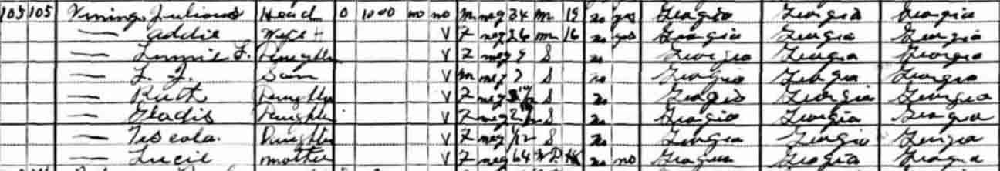
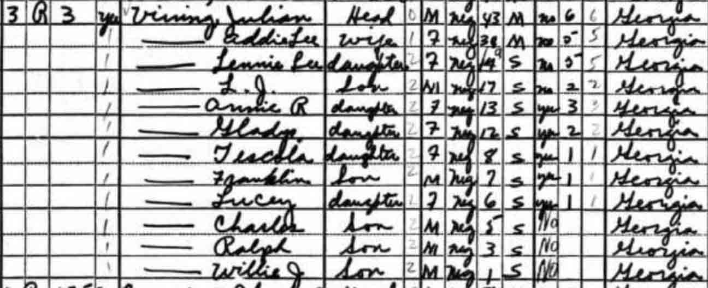

Census Data
| 1920 | 1930 | 1940 | |
| Julian Vining | ? | 34 | 43 |
| Addie Lee (Bryant) Vining | ? | 26 | 38 |
| Lennie Lee Vining | 9 | 19 | |
| L. J. Vining | 7 | 17 | |
| Annie Ruth Vining | 3 y., 10 m. | 13 | |
| Gladys Vining | 2 y., [?] m. | 12 | |
| Tescola Vining | 1 m. [see note below] | 8 | |
| Franklin Vining | 7 | ||
| Lucey Vining | 6 | ||
| Charles Vining | 5 | ||
| Ralph Vining | 3 | ||
| Willie James Vining | 1 |

